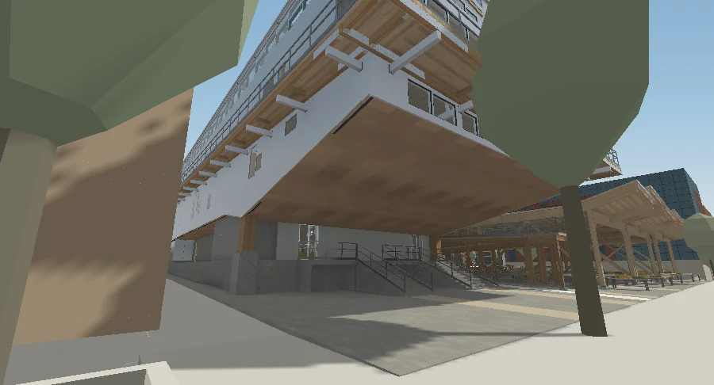
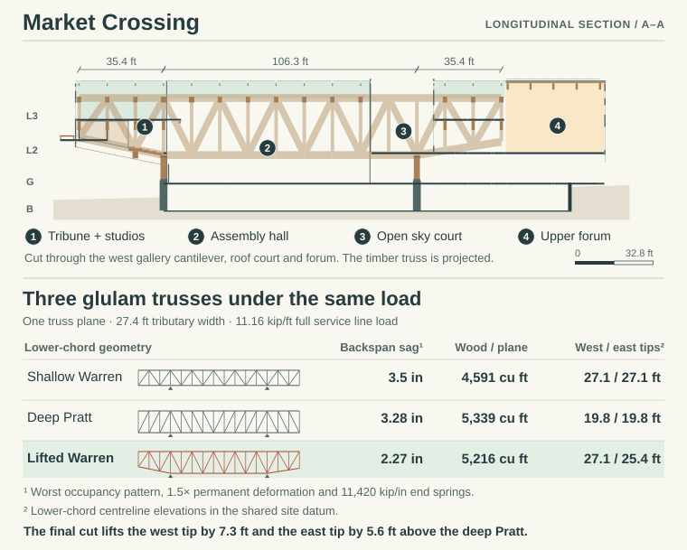
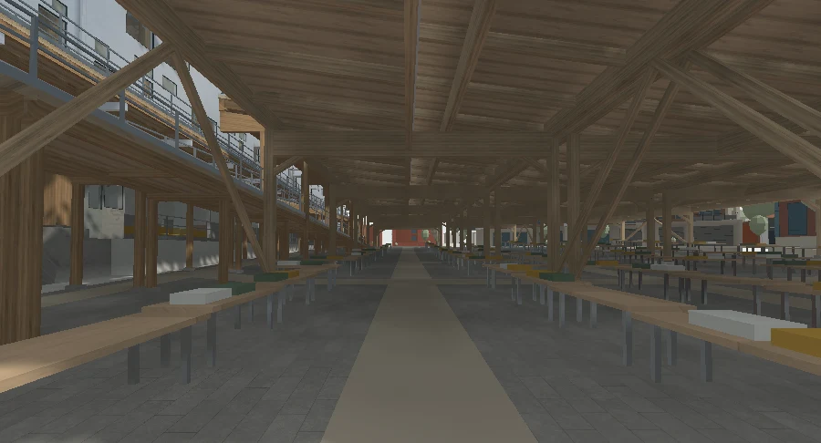

ID3 TEACHING CASE
Market Switchback
A public ramp gives the market a second street in the air.

Fourth Avenue meets the low side of the parcel. Detroit Street meets the diagonal edge about seven feet higher. A gently rising walk brings the two entrances to one public floor. From that landing a pair of red switchbacks climbs past the market to the classrooms and upper reading bay. Each turn looks back onto the square from a different height.
The large assembly hall occupies the full height of the western wing. A glazed gallery projects west beyond its first supports, sheltering the entrance below. Across an open-air court, the smaller hall rises through the two upper levels. The court gives the teaching rooms and upper gallery an outdoor address. At the east end, a second occupied projection turns toward Detroit Street.
Three stepped market roofs shorten as the parcel narrows. Their columns stand along the backs of stalls, keeping each public aisle clear. The service canopy meets the basement stores through the combined goods and passenger lift. The section takes its cue from the continuous ramps of OMA’s Kunsthal in Rotterdam. This original, AI-assisted teaching case was developed for the ID3 exhibition.
Section and structure

The west gallery projects 7.4 m beyond its first bearing. Two 4.2 m-deep steel trusses carry the transverse framing to perimeter supports 29.6 m apart. The tip occupies 20% of the 37 m truss. The eastern wing projects another 5.25 m beyond its primary column line. The roof purlins, floor joists, braces and bearings can be inspected in the Structure layer.
The west truss was compared at depths of 3.2, 4.2 and 5.2 m with the same member sections. A two-dimensional pin-jointed gravity model, using 6.5 kPa across an 8.9 m tributary width, gave maximum backspan deflections of 45, 29 and 22 mm. The middle depth fits between the occupied levels. Connection design, stability, construction stages, wind and foundations require separate engineering checks.
Program in section
| Level | Occupation |
|---|---|
| Lower ground · −1.06 m | Bulk storage, workshop, mechanical and electrical rooms, service lift. |
| Ground · +2.50 m | 360-seat triple-height hall, café, kitchen, gallery, public restrooms and covered market. |
| Level 2 · +6.41 m | 100-seat double-height hall, four classrooms, cantilever gallery and 82 m² open-to-sky court. |
| Level 3 · +10.68 m | Administrative offices, meeting and reading spaces, upper public gallery. |

Daylight and roof energy
Clerestories, ribbon windows and rooflights bring daylight into the halls. Measured in the modeled panel fields, wall glazing occupies about 32% of the panel area and rooflights occupy about 14.5% of the enclosed roof plan. Narrow openings above the market aisles admit additional daylight.
The roofs carry 848 modules at an assumed 520 W each, for 441 kW DC. A PVWatts V8 estimate for the site gives approximately 532,000 kWh AC per year, using a near-south orientation, 8.5° tilt and 14% system losses. Annual output is sensitive to shading from the raised wings and neighboring buildings. The estimate uses typical-year weather and excludes those local shadows.
Kunsthal · OMA PVWatts methodology Download the layered 3D model (.glb)